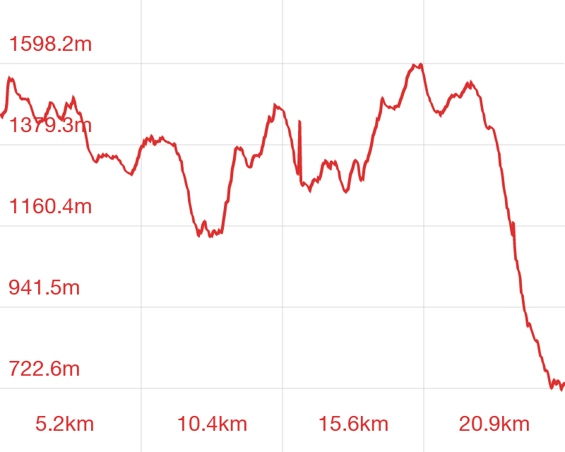

[转寄/推荐][转贴][删除][修改][设置可RE属性][上一篇][返回讨论区][下一篇][回文章][同主题列表][同主题阅读][从这里展开]
发信人: szzxczh (szzxczh), 信区: outdoor
标 题: 201612三尖冬训压队总结——CZH
发信站: 饮水思源 (2016年12月18日11:54:22 星期天)
冬训线是之前很久就计划好的，当时想着协会五六年来冬训走的一直是昱岭关OR大明山，
所以想换一个地方，而且今年因为种种原因三尖没有开成，加之近几次三尖之行都没有走
完，所以就确定了走三尖。
三尖以我上次破冰线的经验，感觉是一条基本没有难点，路径明显，营地也有相当的开发
的成熟的线路，我们在准备的时候参考了过往几次会员线和去年破冰线的资料，主要是制
定时间节点。考虑到之前几次都没能走完，我们出发的时间都计划得比较早，这也使得后
来时间非常得充足。
这次冬训报名的人数如此之少是一开始没有想到的，在报名快要截止的时候我了解到新老
干事人数都不多，就请各部长再去私戳部员询问一下，不过大多表示有课OR有考试OR有大
作业，当时的人员构成老干事已经比新干事多，我想冬训主要是锻炼新干事，现在新干事
不多，而且三尖总体难度不大，我也就没有再去请一些大三大四研究生老干事参加。然后
之后又陆续有四五人退出，所以最后就成了一个凄惨的十分精简的只有11人队伍，不过11
人的小队伍也让后来走得异常地顺利……
这次在发装备的时候，我看到装备部拿出来的是普通的卢卡诺OR pureland的睡袋也没有及
时地反应过来，实际上可以拿天石更厚的睡袋，这样大家晚上可以睡的更好一些，这是一
个比较大的失误。好在这次山上虽然潮气非常地重，不过绝对气温并不是很低。以后冬训
领队组要谨记这一点。
关于第零天的营地，现在三尖的进山口那里已经完全成了柏油马路不再适合扎营了。关于
线路，在冲顶童公尖下来以后左手有两条路，比较明显的那一条路后来证明是错的，走了
没有几步就发现明显偏离了航迹，其余没有什么大的问题。在我印象里面第一天接近营地
时有两个明显的岔路，其中第二个分别通往百丈岭营地和水库营地，而且在树上有一个指
示牌，然而这次我没有发现这个牌子。
这次在行走的时候，大家的体能都比较好，平均速度比较快，中间休息次数也比较少，不
过从后来大家的反应来看，领队可以带的稍微慢一些，这次实际上时间非常充裕，大家虽
然都能跟下来，但是走的比较疲劳，下山以后各种腿疼膝盖疼（下坡的技巧还是要诸位老
干事多多言传身教，不过把腿练得和高神一样强壮好像更有用一些…………
关于这一次的吃的，作为冬训线，wsy组带的吃的还是多了一些，以后出线，尤其是干事线
，冬训线，食物还是精简一些为好。
关于这一次的天气，在武功山明白了什么是阵雨，就是每一片云，每一阵雨都飘在我们的
头上。这次却终于明白了什么是多云。当我看到天气预报连着很多天都是多云的时候，我
以为天气应该是白云飘在头上，风和日丽，下午到了营地，搭好帐篷坐在地上晒装备。然
而除了在进山口到太子尖的一小段路程上看到了壮阔的云海以外，剩下的路程都是走在一
片迷雾之中，大概是走进了云里面，晚上在营地开着头灯也看不见五米以外的东西。
最后，感谢领队组的其他成员，感谢这个不算恶劣的天气，感谢hemind送行时的橘子~以及
这次的出行的新干事走的都很不错，也终于走完了三尖。
以下是一些照片和航迹文件：
 screen.width - 200){this.width = screen.width - 200}">
|
[转寄/推荐][转贴][删除][修改][设置可RE属性][上一篇][返回讨论区][下一篇][回文章][同主题列表][同主题阅读][从这里展开]